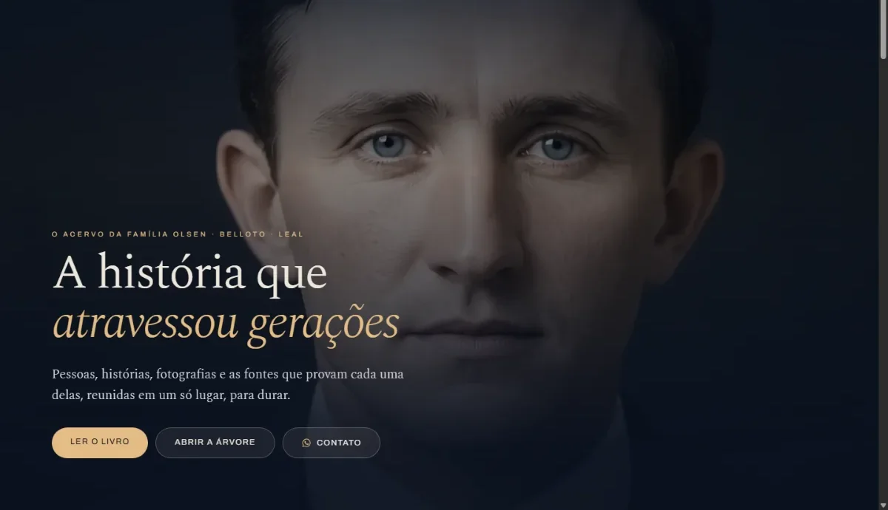
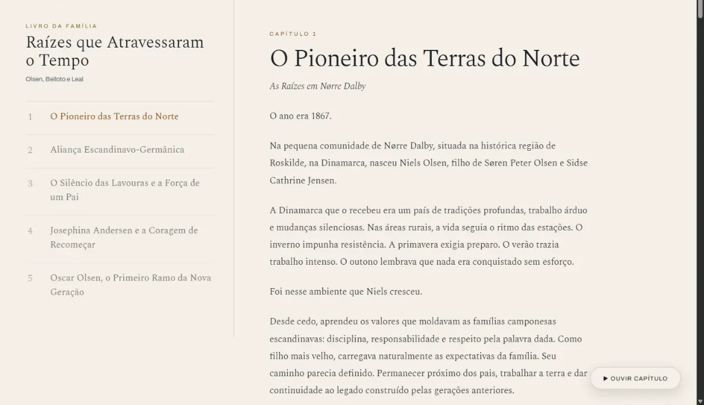
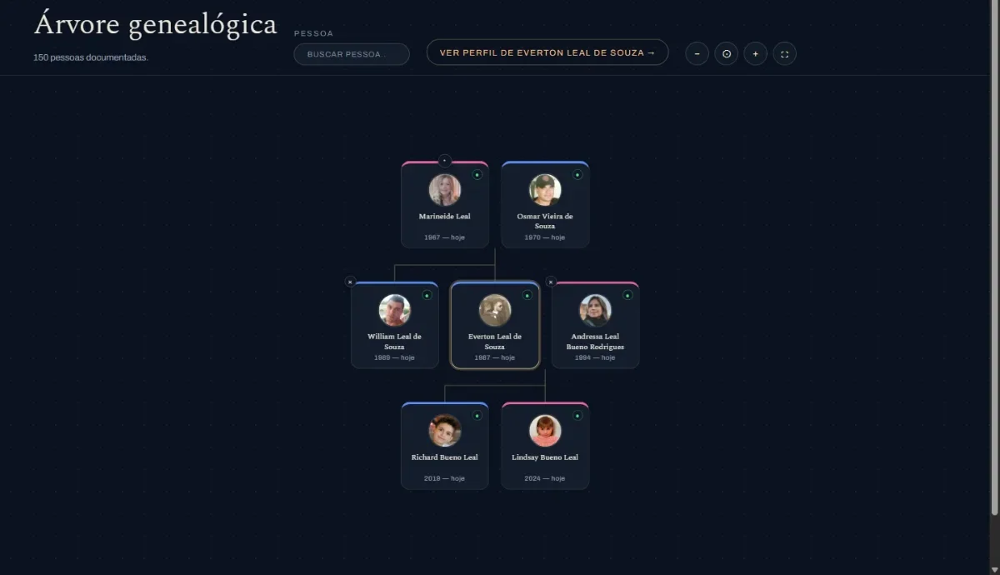
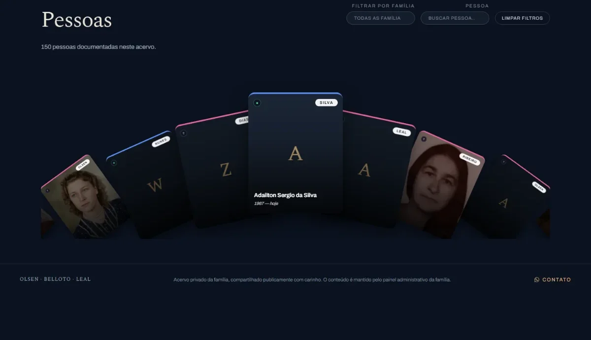
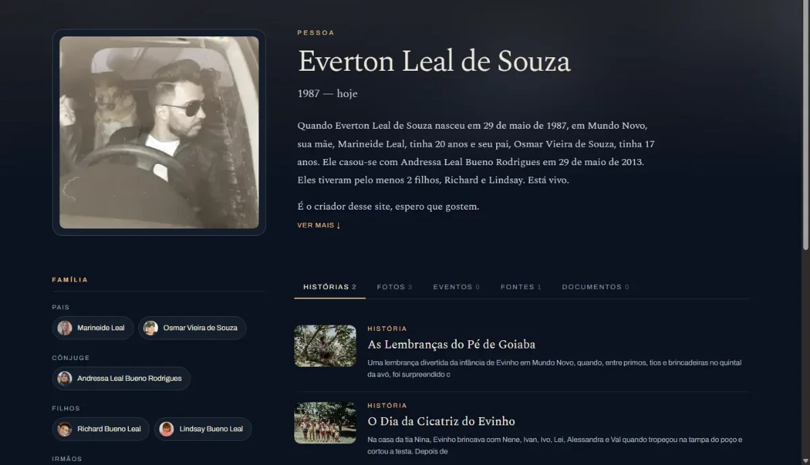
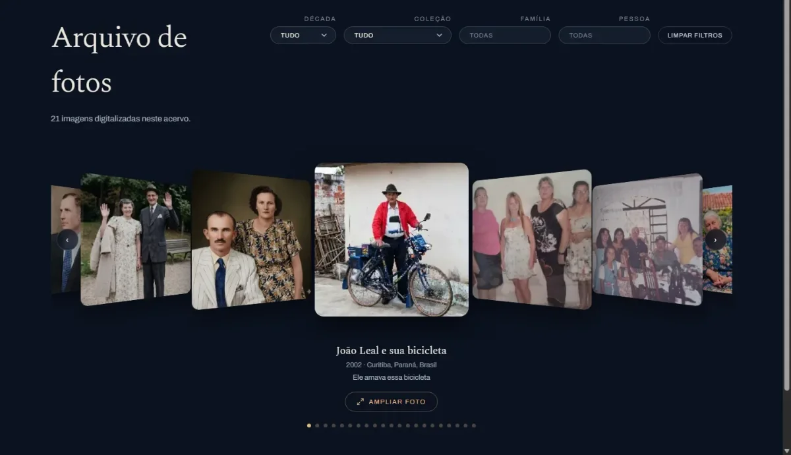
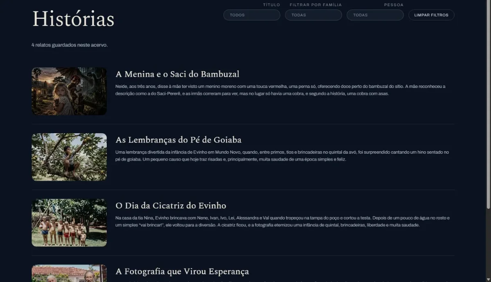
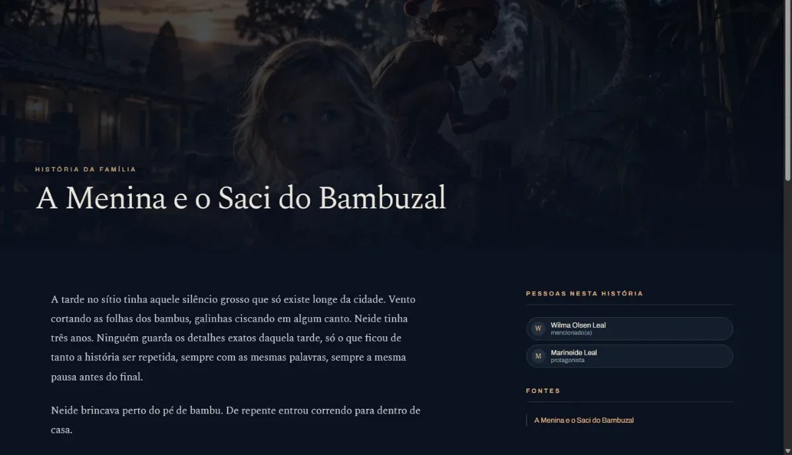
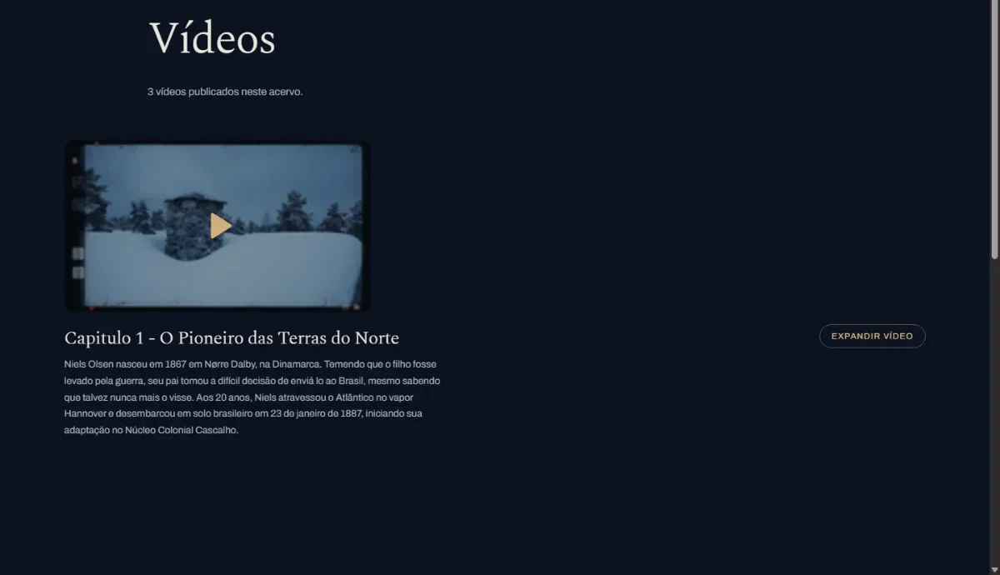
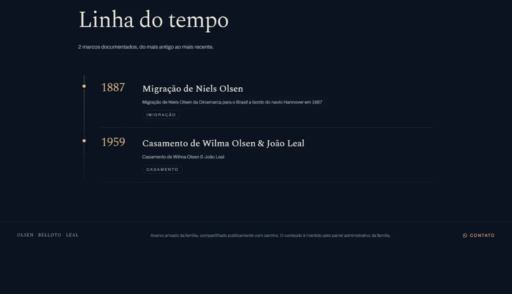

Guia rápido
Como usar o site
Este acervo tem várias páginas, cada uma mostrando um jeito diferente de conhecer a história da família. Aqui vai um passeio rápido por cada uma delas.
Início
A porta de entrada do acervo
Uma frase que resume a família, os números gerais (pessoas, fotos, histórias, linhagens) e atalhos rápidos pro livro, pra árvore genealógica e pro contato. Um pouco mais abaixo, os ramos da família e um convite pra começar por qualquer uma das seções.

Livro
O livro da família, em capítulos
Um índice de capítulos do lado, o texto de leitura do outro, como um livro de verdade, só que online. Cada capítulo pode ter até um narrador em áudio, pra quem prefere ouvir a ler.

Árvore
A árvore genealógica, navegável
Clique em qualquer pessoa pra centralizar nela e ver pais, cônjuge e filhos. Dá pra buscar por nome, ir direto ao perfil completo de alguém e arrastar ou dar zoom pra explorar à vontade.

Pessoas
Todo mundo documentado no acervo
Todas as pessoas cadastradas, uma por uma, com o sobrenome de cada família em destaque. Dá pra filtrar por família ou buscar por nome até achar quem você procura.

Perfil
A biografia de cada pessoa
Um texto biográfico é escrito sozinho a partir dos dados cadastrados (nascimento, pais, casamento, filhos) e reúne tudo que existe sobre aquela pessoa: histórias, fotos, eventos, fontes e documentos, cada um na sua aba.

Fotos
O arquivo fotográfico da família
Fotos digitalizadas com legenda, data e local. Dá pra filtrar por década, coleção, família ou pessoa, e ampliar qualquer uma pra ver em detalhe.

Histórias
Os relatos e memórias da família
Causos, lembranças e histórias contadas em texto corrido, cada uma com uma foto de capa. Dá pra filtrar por família ou pessoa envolvida.

Uma história
O relato completo
O texto inteiro, com foto de capa, e do lado quem são as pessoas envolvidas e quais fontes comprovam aquele relato.

Vídeos
Vídeos publicados no acervo
Vídeos da família com uma descrição de cada um, pra dar contexto de quando e por que aquele momento foi gravado.

Linha do tempo
Os marcos da história da família
Nascimentos, casamentos, migrações e outros marcos importantes, em ordem cronológica, do mais antigo ao mais recente.

Contato
Pra falar com a família
Um jeito de mandar uma história, foto ou documento pra entrar no acervo, ou de pedir um site parecido pra sua própria família.
Esse acervo é mantido pela própria família, pelo painel administrativo. Se alguma coisa parecer diferente do que está aqui, é porque o conteúdo mudou desde então — o passeio continua o mesmo.